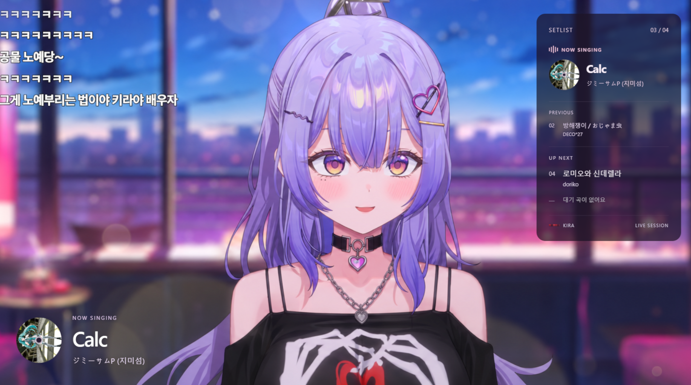
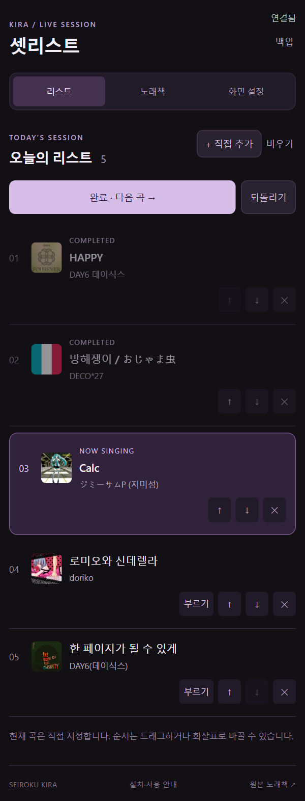
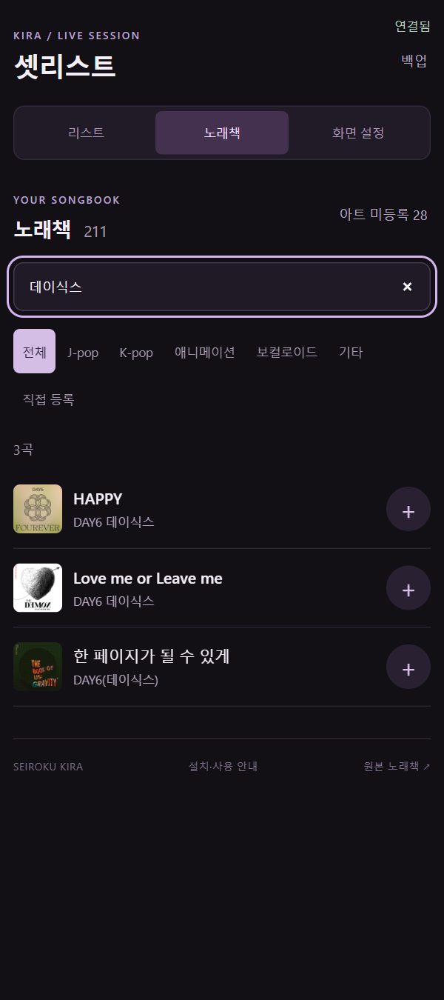
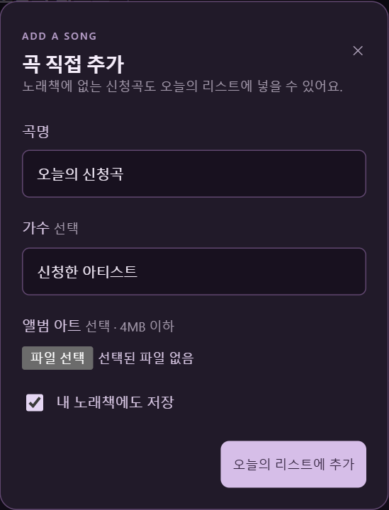
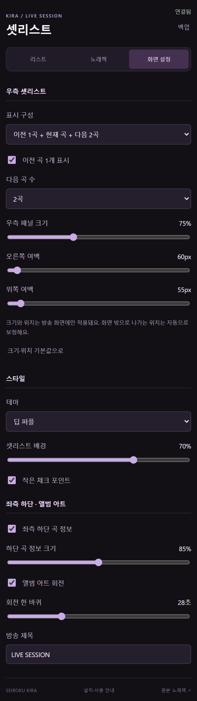
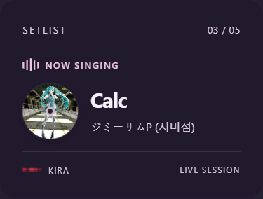
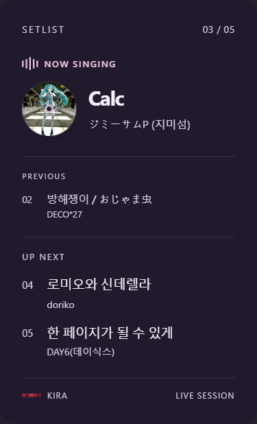

SEIROKU KIRA / LIVE SESSION
OBS 안에서 쓰는
키라 셋리스트
처음 한 번 설치하고 등록하면, 다음부터는 OBS만 켜면 됩니다.

압축을 풀고 install.cmd 실행
- KiraSetlist-OBS.zip을 다운로드해 압축을 전부 풉니다. ZIP 안에서 바로 실행하지 마세요.
- 압축을 푼 KiraSetlist-OBS 폴더의 install.cmd를 더블클릭합니다. 관리자 권한이나 Node 별도 설치는 필요 없습니다.
- 설치가 끝나면 아래 폴더에 프로그램, 노래책, 이 안내서가 저장됩니다.
%USERPROFILE%\KiraSetlist작업 폴더에서는 dist/KiraSetlist-OBS/install.cmd를 실행해도 됩니다. 설치 후 이 안내서를 열면 실제 경로가 표시됩니다.
자동 실행 → 조작 독 → 방송 소스
1. 자동 실행 스크립트
OBS 상단 도구 → 스크립트 → +에서 아래 파일을 선택합니다.
%USERPROFILE%\KiraSetlist\kira-setlist.lua
2. 오른쪽 조작 패널
상단 독 → 사용자 브라우저 독을 열고 이름은 키라 셋리스트, 주소는 아래 값을 입력한 뒤 적용합니다. 독 제목을 끌어서 OBS 오른쪽에 고정하세요.
See OBS-guide.html in your installed KiraSetlist folder for the exact address.조작 독 자체는 방송에 나오지 않습니다. 등록 후 별도 웹 브라우저를 켤 필요가 없습니다.

3. 방송용 투명 오버레이
도구 → 스크립트 → kira-setlist.lua에서 현재 장면에 오버레이 추가를 누릅니다. 소스 목록에 생긴 키라 셋리스트 오버레이를 캐릭터와 배경 소스보다 위로 올리세요.
같은 장면에 이미 있으면 중복으로 추가하지 않습니다. 다른 장면에서도 같은 버튼으로 등록할 수 있습니다.
브라우저 소스를 직접 등록하려면
소스 + → 브라우저 → 로컬 파일을 켜고 아래 파일을 선택합니다.
%USERPROFILE%\KiraSetlist\overlay-launcher.html너비 1920, 높이 1080, FPS 30. 보이지 않을 때 소스 종료는 꺼두세요. 다른 캔버스에서는 소스를 캔버스에 맞춰 같은 비율로 조정하세요.
참고용 미리보기 배경은 원본 방송 스크린샷이라 기존 셋리스트까지 이미지에 포함돼 있습니다. 실제 방송에서는 캐릭터·배경 영상 위에 새 오버레이를 올리고 기존 셋리스트를 끄세요. 스크린샷 속 기존 UI는 새 오버레이가 만든 것이 아닙니다.
화면 설정에서 크기와 곡 수 조절
| 표시 구성 | 현재 곡만 / 현재 곡 + 다음 2곡 / 이전 1곡 + 현재 곡 + 다음 2곡 |
|---|---|
| 직접 설정 | 이전 곡 1개 ON/OFF, 다음 곡 0~5개. 숨긴 영역만큼 패널 높이도 줄어듭니다. |
| 우측 패널 크기 | 50~120%. 기본 75%로, 예전 크기보다 작게 시작합니다. |
| 오른쪽·위쪽 여백 | 슬라이더로 방송 화면 안의 위치를 옮깁니다. 화면 밖으로 나가는 위치는 자동 보정합니다. |
| 좌측 하단 | 곡 정보 ON/OFF 및 크기 50~120%. 우측 패널과 따로 조절합니다. |
| 배경·디스크 | 반투명도, 딥 퍼플/라벤더, 체크 포인트, 회전 ON/OFF와 속도. |
우측 패널을 작게 쓰려면 현재 곡만 + 크기 65~75%부터 시작해 보세요. 설정은 자동 저장됩니다.
OBS 조작 창 자체의 너비는?
OBS 중앙 미리보기와 오른쪽 독 사이 경계선을 좌우로 끌면 됩니다. 독 제목을 끌어 분리하면 별도 창으로 띄울 수 있고, 창 테두리를 끌어 크기를 바꿀 수 있습니다. 약 260~380px 너비에서도 조작할 수 있도록 구성했습니다.
방송 오버레이는 패널 내부 설정으로 줄이세요. OBS에서 전체 오버레이 소스를 줄이면 좌측 하단 UI까지 함께 움직입니다.
추가하고, 부르기로 지정하고, 다음 곡
- 노래책 탭에서 곡명·가수·초성으로 검색하고 +를 누릅니다.
- 리스트 탭에서 부를 곡의 부르기를 누르면 현재 곡과 회전 아트가 표시됩니다.
- 노래가 끝나면 완료 · 다음 곡을 누릅니다. 순서는 드래그 또는 화살표로 바꾸고, 실수하면 되돌리기를 누릅니다.
- 노래책에 없는 곡은 + 직접 추가에서 입력합니다. 내 노래책에도 저장을 켜면 다음 방송에서도 찾을 수 있습니다.
앨범 아트가 없거나 이미지를 직접 넣지 않으면 제공받은 키라 기본 CD를 표시합니다. 곡 옆 이미지를 눌러 바꿀 수 있습니다. 음원을 재생하거나 가사를 싱크하는 도구는 아닙니다.
업데이트는 OBS를 닫은 뒤
새 ZIP을 전부 압축 해제하고 install.cmd를 다시 실행하세요. 처음과 같은 설치 경로를 사용하면 개인 곡·리스트·직접 등록한 이미지가 보존됩니다. 기존 스크립트·독·소스는 다시 등록할 필요가 없습니다.
백업은 아래 두 폴더를 함께 복사하세요. 복원할 때는 OBS를 닫고 같은 위치로 되돌립니다.
%USERPROFILE%\KiraSetlist\data
%USERPROFILE%\KiraSetlist\public\artwork화면이 연결 중에서 멈추면 도구 → 스크립트에서 ‘연결 다시 시작’을 누르세요. 시작 시 잠깐의 연결 대기는 정상입니다. 앨범 이미지 URL이 연결된 곡은 인터넷이 필요하고, 연결에 실패하면 기본 CD로 표시합니다.
사용할 버튼과 설정 화면





조작·설정 화면은 실제 앱을 별도 테스트 환경에서 캡처했습니다. 예시 곡과 설정을 사용했으며 개인 방송 리스트를 변경하지 않았습니다.